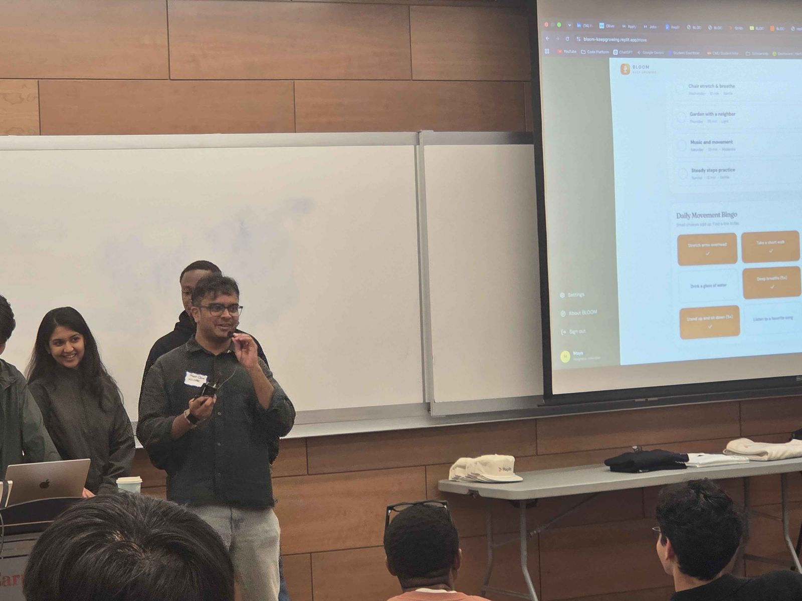
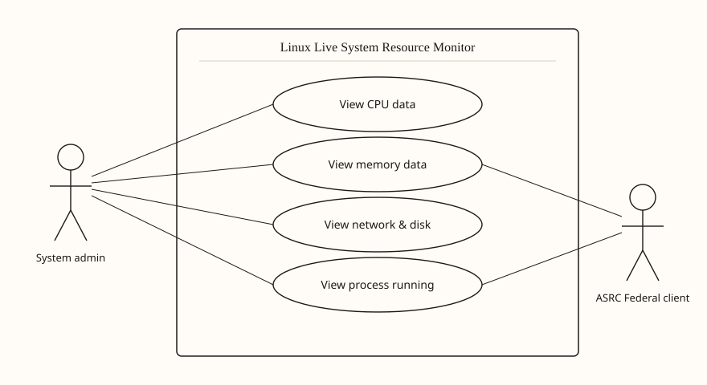
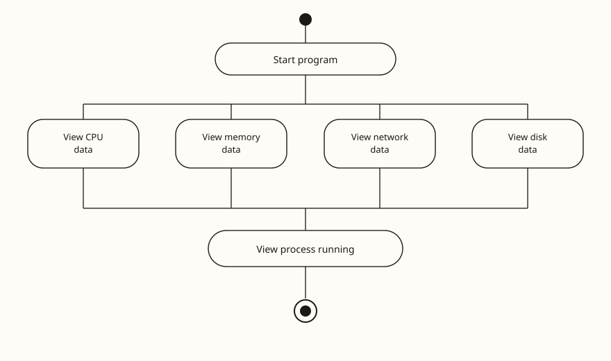
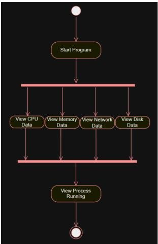
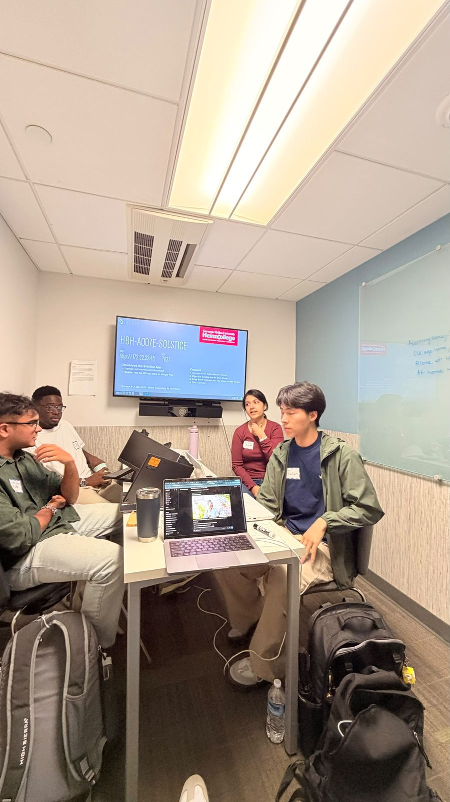

Buildathon
BLOOM
Presented BLOOM at the CMU Heinz / Replit Build-with-AI Buildathon — a companion experience focused on connection and growth for older adults.

Morris Plains, NJ · Open to Summer 2027
CMU Heinz MSISPM · Cyber, risk, and GRC
GRC & Compliance Builder | CMU Heinz MSISPM ’28 | ISO 9001 · NIST · RBAC | Risk Assessment | NSA/DHS Certified | Security+ (in progress) | Open to Summer 2027 Internships
About
I am a Carnegie Mellon Heinz MSISPM student focused on cybersecurity governance, risk, and compliance. Recent work includes Vanta-backed administration and honeypot visibility at Werbel Microwave, and auditable research operations at Sensonics International.
I finished a B.S. in Computer Science at Rowan University’s John H. Martinson Honors College in three years, Magna Cum Laude (GPA 3.7). I hold NSA/DHS certification, am pursuing Security+, and I am looking for a Summer 2027 internship in cyber, risk, or GRC.
Experience
Werbel Microwave · Whippany, NJ (Remote)
Sensonics International · Haddon Heights, NJ
Werbel Microwave
Werbel Microwave
Projects & achievements
Buildathon
Presented BLOOM at the CMU Heinz / Replit Build-with-AI Buildathon — a companion experience focused on connection and growth for older adults.

Rowan project
Rowan project delivering live alerts and key findings for ASRC Federal clients. Use-case and activity models describe the monitoring loop, thresholds, and findings path.



Industry
Attended Marketplace Risk NYC — conversations with marketplace risk, trust & safety, and compliance practitioners. Attendance only; not an award.
Education
M.S. Information Security Policy & Management (MSISPM) ’28

B.S. Computer Science · Magna Cum Laude
Skills
ServiceNow GRC · OneTrust · Vanta · NIST · ISO 9001 · RBAC · Risk assessment · Business continuity
MITRE ATT&CK · SIEM / Power BI · OSINT · Incident response · Power Automate
Python · JavaScript · Java · C++ · SQL / MongoDB · AWS · GCP · Azure · Jira · Zoho CRM
Contact
https://preet-desai.me · Resume first, then profiles.